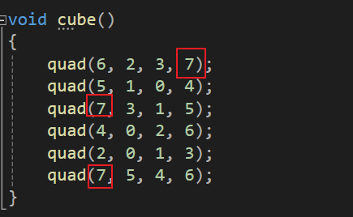
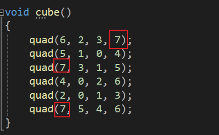
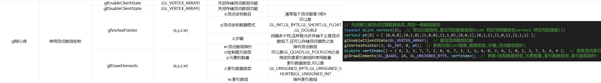
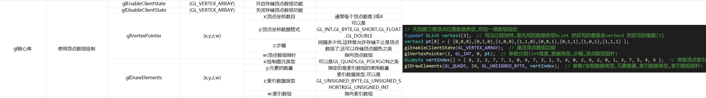

1.发现问题
1.重复顶点问题,资源浪费

2.复杂场景大量函数调用的问题
一个Cube一个函数,那Sphere,Cpsule等等都需要,这就需要大量的函数调用,显然会严重影响运行速度.

2.复杂场景大量函数调用的问题
一个Cube一个函数,那Sphere,Cpsule等等都需要,这就需要大量的函数调用,显然会严重影响运行速度.
2.使用顶点索引来解决问题
OpenGL提供了一种机制来减少处理坐标信息的函数调用数量.通过使用顶点数组vertex array

- 引用函数glEnableClientState(GL_VERTEX_ARRAY)激活OpenGL的顶点数组特性
- 使用函数glVertexPointer指定顶点坐标的位置和数据格式
- 使用子程序如glDrawElements显示场景,该子程序可处理多个图元而仅需少量的函数调用
